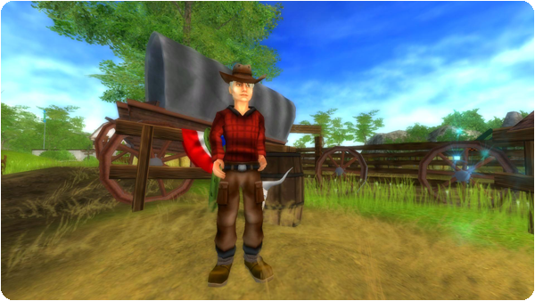

Üdv!
Itt van a heti szórakoztató frissítés!
Új verseny:
Szereted a western lovaglást? Találkozz Josh-sal Moorland külvárosában. Ő egyfajta szakértő, ha western lovaglásról van szó. Melyik western lovas nem szereti a jó Pole Bending versenyt? Nyeregbe, és próbáld ki!

Új küldetés:
Marley-t a western lovaglás ihlette, és nagy tervei vannak! De ahhoz, hogy megvalósítsa terveit, segítségre van szüksége. Lovagolj el Marley-hoz Silverglade falu külvárosába, és segíts neki!
Új ruhák:
Új, stílusos western ruhák kaphatók Moorlandben és Marley boltjában!